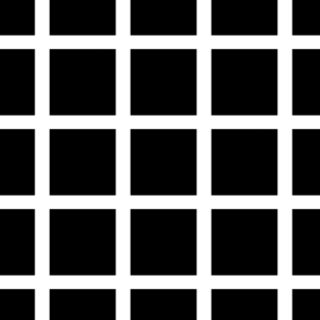
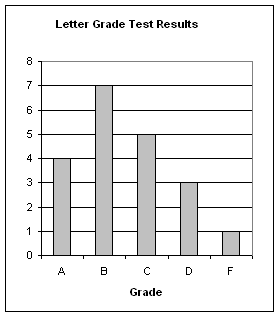
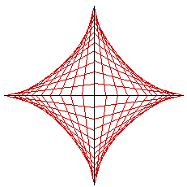
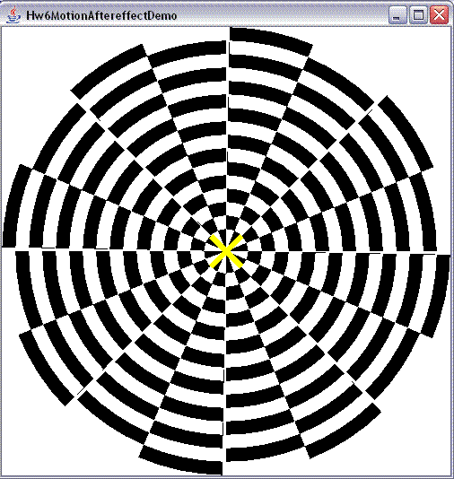

-
Transpose Musical Notes
In order to have an interesting application of arrays, we will use a simple musical note player. First, take a look a musicalNotePlayer/MusicalNotePlay.java. Run it, listen to the results. Now, look inside that file. You will see a method with this signature:
public static void playNotes(int[] notes, int[] times) throws Exception {
}
Here is a simple explanation of how this works, taken from the header comment in the file:
// Simple demo of a simple musical note player.
// It takes two arrays -- one containing the notes, the other containing the times for each note.
// For the notes, 60 is middle C. 61 is C# (the next note). 62 is D (the note after that).
// Legal note range: 1 to 88 (inclusive)
// For the times, 64 is a typical quarter note, 256 a typical whole note.
// Legal time range: 1 to 256 (inclusive)
// If the "times" array is null, it will play all quarter notes.
You do not need to understand music theory in order to complete this exercise. However, the methods you write here will create arrays of integers which can be used as arguments to the "playNotes" method. So you can hear your results! Fun!
Now, in the file Lab6.java, write the method:
public static int[] transposeNotes(int[] notes, int step) {
}
This method makes a song higher-pitched or lower-pitched. This method takes a non-null array of notes (as described above), and another int, the "step", and returns a new array of notes where each note in the resulting "transposed" array equals the corresponding note in the original array plus the (possibly-negative) step. There is this exception, however: in no case shall you transpose so that any notes fall outside of the legal range of [1,88]. In such a case, you should reduce the step's magnitude by just enough to keep the transposed result in range. For example, if the highest note in the incoming array is 80, and the step is +10, then you should reduce the step to +8. Similarly, if the lowest note in the incoming array is 8, and the step is -10, you should change the step to be -7. Be sure to include an appropriate test method! Also, for fun, try transposing the sample song in the MusicalNotePlayer, perhaps as such:
for (int step=0; step < 12; step++)
playNotes(transpose(songNotes,step), songTimes); // a familiar song, now transposed repeatedly
You should hear the song played repeatedly, increasing its pitch by a little bit (one-half step) each time it plays.
-
Scrabble Score
In the game of Scrabble, players receive points for spelling words, where each letter has an associated point value (1 for A, 3 for B, 3 for C, 2 for D, and so on...). For example, ignoring special squares (which we will), the word "CAB" is worth 3+1+3, or 7 points. For more details, here is the Wikipedia page on Scrabble:
http://en.wikipedia.org/wiki/Scrabble
In the file Lab6.java, write the method:
public static int scrabbleScore(String s, int[] letterValues)
This method takes a String s and an array of 26 integers representing point values of the letters from A to Z in order, and returns the sum of the point values for each letter in the string. If the string is null or empty or if it contains any characters besides uppercase letters, or if the letterValues array is null or not of length 26, the result should be -1 to indicate an error.
If you are interested, here is an array holding the actual letter values for the English-language version of Scrabble:
private static int[] letterValues = {
// A, B, C, D, E, F, G, H, I, J, K, L, M
1, 3, 3, 2, 1, 4, 2, 4, 1, 8, 5, 1, 3,
// N, O, P, Q, R, S, T, U, V, W, X, Y, Z
1, 1, 3,10, 1, 1, 1, 1, 4, 4, 8, 4,10
};
Note: The letterValues array may contain point values besides the official point values (say, 25 for 'A', 18 for 'B', -33 for 'C', and so on). Your method must work for whatever letterValues array is provided.
-
Guessing Grade Odds
(Bernoulli Trials + Monte Carlo Methods)
Say that you are taking a multiple choice test with 10 questions each with 4 choices. If you guess randomly on every question, what are the odds that you score 7/10? According to this page (http://www.mathwords.com/b/bernoulli_trials.htm), for example, you can use the Binomial Probability Formula over Bernoulli Trials to compute the answer of 0.0031. Great! But here we'll get that same answer without all that mathiness.
In the file Lab6.java, write the method:
public static double guessingGradeOdds(int targetScore, int questions, int choicesPerQuestion)
This method takes a targetScore (number of questions you hope to get correct), the total number of questions, and the number of choices per question, and uses Monte Carlo methods (and not the Binomial Probability Formula, or any other direct means of computation) to compute the odds of getting exactly that many questions correct if guessing on a multiple choice test as described. For example, from the notes above, we expect that:
guessingGradeOdds(7, 10, 4)
would return a value almostEqual to 0.0031.
-
Hermann Grid Illusion
In the file Lab6HermannGridIllusion.java, write a program that displays the following picture (filling the window as it resizes, of course):

As explained in the Hermann Grid Illusion Wikipedia page: "The Hermann grid illusion is an optical illusion reported by Ludimar Hermann in 1870. The illusion is characterised by 'ghostlike' grey blobs perceived at the intersections of a white (or light-colored) grid on a black background. The grey blobs disappear when looking directly at an intersection."
Note: For this problem, it is acceptable to draw the edge rectangles somewhat off-screen, so that all the painted rectangles share the same dimensions.
Also note: you do not have to pixel perfect on the margins. Figure about one-half square is visible along each edge.
-
Scrolling Text Animation
In the file Lab6ScrollingTextAnimation.java, write a program that reads the first line from the file "ScrollingText.txt", and displays it in text that scrolls horizontally across the screen. To do this, you should draw each character individually, using drawCenteredString, with the characters initially equally-spaced across the screen. Then, with each timer fired, shift the characters one to the left (without wraparound). When no characters are visible, start the process over again. If the text file does not exist, scroll the message "Could not read ScrollingText.txt", and if the file is there but the first line is blank, scroll the message "Blank first line".
This problem is not fully specified. Do not ask for clarifications here! Instead, make good design decisions and go with them! Some modest bonus will be awarded for especially clever or attractive designs.
-
Histogram of Grades
In the file Lab6HistogramOfGrades.java, write a program that reads in an unsorted list of grades from the file "Grades.txt", and displays a histogram of those grades, visually displaying how many students scored A's (90-100), B's (80-89), C's (70-79), D's (60-69), or F's (0-59). You must label the entire histogram and also label the x axis (the grades), but you do not have to label the y axis (# of students) (why is this more difficult to do well?).
For example, you might produce a histogram like this:

This example does more than is required, actually -- you do not need horizontal lines, nor the y-axis labels, nor the tick marks on the x axis.
Again: this problem is not fully specified. Do not ask for clarifications here! Instead, make good design decisions and go with them! Some modest bonus will be awarded for especially clever or attractive designs.
-
Flag of Kuwait
In the file Lab6FlagOfKuwait.java, write a program that paints the flag of Kuwait (so it fills the window when resized):

-
Steelers Logo
In the file Lab6.java, write the method:
public static void makeSteelersLogo(int width, int height, String filename)
This method takes a width, a height, and a filename, and saves a picture of the Steelers logo with those dimensions to that file. In case you did not know it, here is the Steelers logo:
To do this, you must create a new BufferedImage, then draw the Steelers logo into that image using nothing but drawLine, fillOval, fillRect, drawCenteredString, setFont, setColor.
As a first step, you must write this exact helper method:
public static void fillAstroid(Graphics page, Color color, int cx, int cy, int r)
This method takes a page, a color, a center point (cx,cy), and a radius, and draws a single filled astroid (the type of hypocycloid in the Steelers logo) in the given color that is just contained by the circle with the given center and radius. Do this as follows:
1. Draw "x" and "y" axes centered inside the circle.
2. Place n evenly-spaced points along each of the x and y axes. (You do not have to actually draw these points, but you will use them in the next step...)
3. In the first quadrant:
* Draw a line from (0, n) to (1, 0)
(That is, from the highest point on the y-axis to the first point to the right on the x-axis)
* Draw a line from (0, n-1) to (2, 0)
(That is, from the second highest point on the y-axis to the second point to the right on the x-axis)
* And so on (as you move down the y axis, you move right on the x axis). Of course, you must use a loop to draw all these lines!
4. Do the same for the other three quadrants.
Here is a picture of an astroid drawn in this manner, with about 10 points on each positive or negative coordinate axis:

To a limit, the more points you use, the more filled-in the astroid becomes. Your method must use enough points-per-axis so that the astroid looks to be entirely solid. Curiously, due to roundoff errors, using too many points-per-axis might have the counterintuitive effect of making the astroid appear less filled in! Find a good number by trial and error.
Note: while you should be very close, you do not have to be pixel-perfect in this problem. Also, your font does not have to exactly match, but should just be something reasonable.
-
Flag of the European Union
(With Stars and Circular Placement)
In the file Lab6FlagOfTheEU.java, write a program that paints the flag of the European Union (so it fills the window when resized):
You should draw the stars correctly, of course!
-
Connect4 or Othello
For this problem, you may write either Connect4 or Othello (and you may not write the other one for bonus; instead, try one of the bonus problems in the Challenge section!). Your choice, but if you choose Othello, which is a bit harder, you will receive +5 bonus points.
Connect4 Option:
In a file named Lab6Connect4.java, write the game of Connect4 provided in connect4.jar
To play the game: Two players alternate turns dropping pieces (using the left, right, and down or space keys) in columns. First player to get 4-in-a-row wins that game. If the board fills up, that game is a tie. Play the game a bit to understand the rest of the design spec. The game IS the design spec, so your games should match its behavior (though you do not have to be "pixel perfect" -- just "very close"). For more details, here is the Wikipedia page on Connect4:
http://en.wikipedia.org/wiki/Connect_Four
Othello/Reversi Option:
In a file named Lab6Othello.java, write a two-player game of Othello (also known as Reversi). If you do not know how to play this game, the rules are simple and it is quick to learn (though hard to master). You can learn about the game at the Wikipedia page:
http://en.wikipedia.org/wiki/Reversi
You can also play the game against a computer by searching for "Othello Applet" in the search engine of your choice. (Of course, it is also possible to find some Java source code for Othello by a similar search, but that is most definitely not allowed! Write the code yourself, and do not look at anyone else's implementation!!!)
Your program will not play against a person. Instead, it will support two people playing each other, in the same manner as the sample Connect4 game in the previous section. Your program should not allow illegal moves, however. It should also automatically pass if a player has no legal moves, and automatically end the game when neither player has a legal move. Keep score and provide a generally pleasing and easy-to-use UI (again, check the Connect4 sample program to gauge what we mean, though you have the freedom to design this however you want). Have fun with it!
-
Motion Aftereffect
(Animated Optical Illusion)
In a file named Lab6MotionAftereffect.java, write a program that reproduces the Motion Aftereffect illusion shown and described here:
http://www.michaelbach.de/ot/mot_adapt/index.html
Note: for 3/4-credit on this problem, you can skip the animation and instead just draw the non-animated picture shown below.
In any case, your reproduction does not need to be perfect, but should be reasonably close (hopefully enough to generate the optical illusion). For example, here is a snapshot of our reasonable-enough solution:

You also do not need to include any of the buttons or otherwise let the user adjust anything -- just use values close to the default values. You should, however, include the Buddha picture (or some other suitable picture), though, since that is important to see the illusion that the picture is expanding/contracting (it's not)).
Hint: use fillArc extensively! Our solution called fillArc well over 200 times to draw the picture above -- once for each individual segment. Now, we didn't draw segments, but arcs, so we had to draw the arcs in a specific order so they hid portions of previous arcs, leaving behind the segments you see now.
-
Word Search Generator
In the file Lab6BonusWordSearchGenerator.java, write the method:
public static char[][] makeWordSearch(String[] words, int timeLimitInMilliseconds)
This method takes an array of Strings, the word list, and a time limit in milliseconds, and creates and returns a new word search board (as a 2d array of chars) that contains all the given words such that:
- The position of each word is chosen randomly;
- The direction of each word is chosen randomly.
- The dimensions of the board are as small as you can get them;
- Your method runs within the given time limit.
The time limit is on the grader's machine, not yours, so do not make assumptions as to how fast the machine is. Instead, you should call System.currentTimeMillis() at the start of your method, and then again occasionally as your method runs. The difference between the return values of the initial call and subsequent calls is how long your method has been running, in milliseconds. Note that this method returns a long, but the difference can safely be stored in an int.
This is a contest. The smaller your board (rows*cols), the better your solution. Strong solutions will receive extra bonus, and the overall best solution will receive considerably more bonus. This is a chance to really shine!!! How low can you go?!?
- The position of each word is chosen randomly;